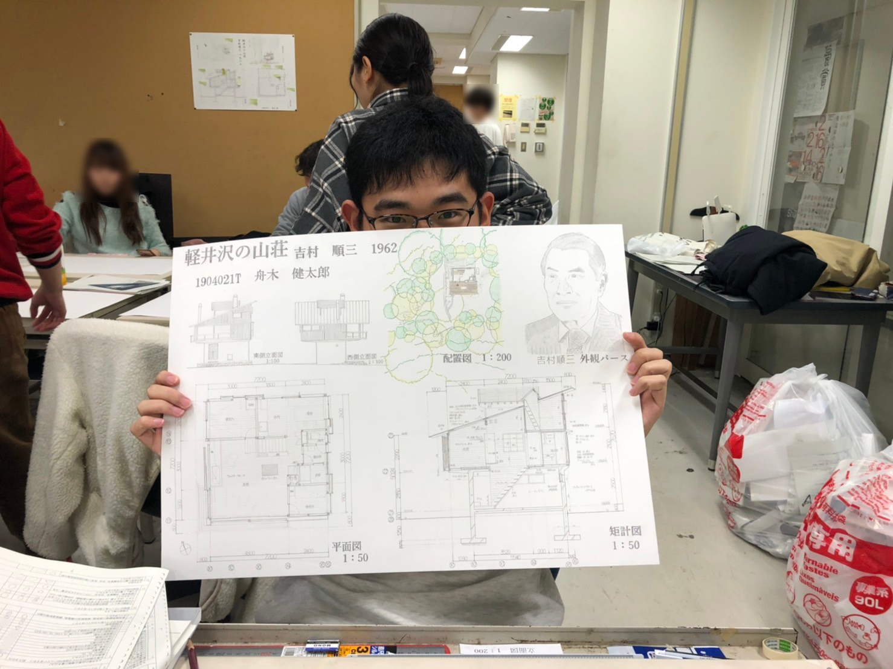

吉村順三外観パース 2020
自筆年譜に書いた通り。吉村順三のレタリングだけフォントが違うのが気になる。
これで僕も学科の中で市民権を得た…とか思っていたが、上には上がいた。
隣のグループの講評会にて、山口先生という声の高いくせにハードロックばかり聴いている先生が、一枚ずつ図面を見て出来不出来を講評していた。
トレース課題なので講評するほどのこともない。滞りなく淡々と進んでいくが、ミゾグチという男の図面を見たとき、ふと山口先生は言葉に詰まり、少しばかりの沈黙が生まれる。
訝しく皆が様子をうかがっていると、先生はゆっくりと口をひらき、「これは…定規使ってるか？」とミゾグチにまさかの問いを投げかける。
定規を使わないの意味が分からない。トレース課題なんだから、定規を当てて線を引くだけである。皆が一斉にミゾグチの方を見る。
聴衆は定規を使っていると使っていないのあいだに宙ぶらりんになっている。
ミゾグチは小柄でおとなしい男の子で、一見の限りでは真面目生徒のように見える。
高校時代はサッカー部の補欠みたいなクソ陽キャが定規を使っていないのならば納得がいくが、まさかミゾグチが使っていないなんてことがあるだろうか…？
ミゾグチも山口先生と同じくらい、それよりも長いくらいの間を取る。
そして、ゆっくり口を開き、「…すません。使ってません…」と答えた。
声にならない衝撃が製図室の学生の脳天を駆け巡る。まさか。本当に使っていなかったなんて…！
これがかの有名な「ミゾグチフリーハンド事件」である。吉村順三外観パースが皆から忘れ去られたのは言うまでもない。
明智光秀もびっくりの、一瞬の天下であった(？)。僕の大学デビューは延期された。
そうしているうちに春休みがきて、コロナが来て、オンライン授業になった。
ミゾグチは今、どこで何をしているんだろう。元気にしているだろうか。図面を描く仕事以外をしているといい。
余談だがこの時期は、菅田将暉の「さよならエナジー」と、菅田がMVで着ているようなモコモコの服が流行っていた。
人気者のマサが、千鳥ノブが言ったみたいに聞こえる石崎ひゅーいの曲紹介「ｻﾖﾅﾗｴﾅｼﾞｨ！」をずっと真似していた。
マサは白いモコモコを着ていた。六甲山のふもとには、本当に六甲おろしが吹くようだった。
神戸に来て最初の冬のことである。
